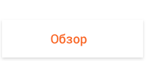
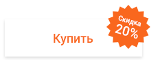
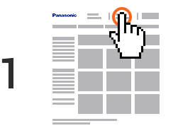
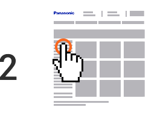
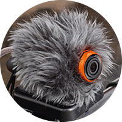
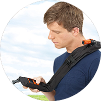
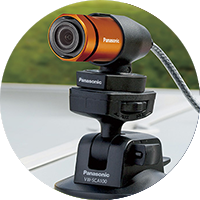
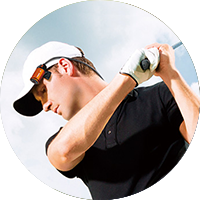
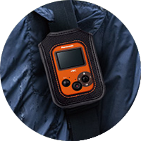
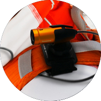

|  |  |
|
 Зарегистрируйтесь или авторизуйтесь на сайте eplaza.panasonic.
|
 Введите промо-код
|
| Собственный новейший процессор Crystal Engine Pro+. Он в полтора раза быстрее прошлых разработок и способен писать видео 3840 x 2160/25p с максимальным битрейтом 72 Мбит/с. | |
| Сенсор обратной засветки BSI 1/2.3” (Back-illuminated sensor), который в условиях низкой освещенности дает меньше шумов, чем стандартный CMOS. Разрешение матрицы составляет 12.76 мегапикселей. | |
| 1450 мАч аккумулятора хватает на 135 минут съемки видео в режиме 1920×1080 50p. Показатель выше среднего, если сравнивать с другими экшн-камерами. | |
| 1.5”-дисплей и улучшенная система оптических элементов: фокус 3.4 мм, f/2.8, 160° по диагонали. |
| Четыре режима съемки: скоростная и нормальная запись видео, циклическая запись, фотосъемка. | |
| Камера удивительно быстро подстраивается под быструю смену освещения. |
| NFC модуль для синхронизации камеры со смартфоном в одно касание. | |
| Wi-Fi А для удаленного управления процессом записи или публикации снимков в социальных сетях. Можно также настроить онлайн-трансляцию через Lumix Club. Тут масса вариантов использования – от видеокастов на концертах до видеоняни в детской комнате. |
| Степень защиты камеры – IPX8. Она может в течение получаса работать на глубине до 3 метров без дополнительных боксов | |
| Обладает функцией шумоподавления, ваш голос и комментарии услышат все зрители | |
| Приложение Panasonic Image App |
|  |  |  |
| VW-WJA100G Система защиты от ветра |
VW-MBA100GU Универсальный ремень |
VW-SCA100GU Крепление на присоске |
|  |  |  |
| VW-CLA100GU Крепежный зажим |
VW-HLA500GU Универсальный чехол |
VW-MKA100 Универсальное крепление |